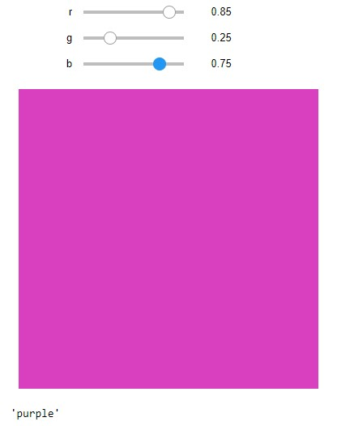
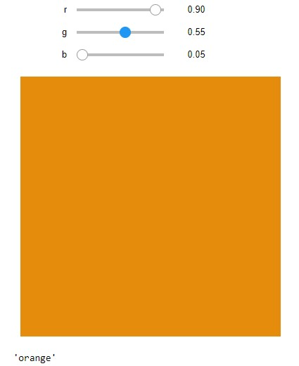
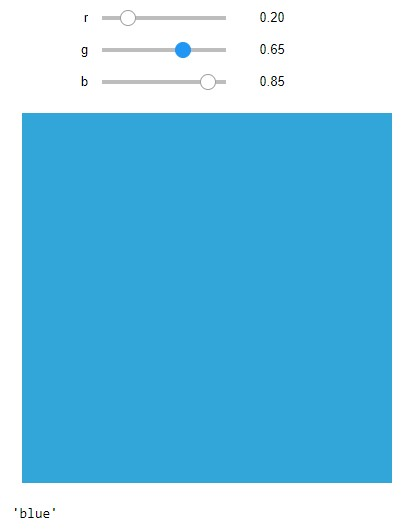

Colour classifying neural network from scratch
This project is a neural network that can classify colours. In comparison to the power and usefulness of the image classifiers and large language models at the cutting edge of machine learning today, this project is little more than a toy. However it was an excellent opportunity for me to learn about how neural networks really work and it was a great way to cap off a project that I've wanted to complete for years.
First attempts
About 6 years ago, when I was getting a little better at programming, I decided that I wanted to make a neural network. I had heard about them from watching videos on YouTube, and I thought it would be a really cool idea to try. I thought that a good application to start with would be classifying RGB-value colours, because it's a task that is simple enough that a neural network would only have 3 inputs and 8 outputs, but it's also not too simple that a conventional program could perfectly categorize the colours that a human can. Identifying what colour something is is kind of loosely defined. A colour that I might call yellow someone else may call orange, or a colour that I might call blue someone else may call green. Different people, languages, and cultures define where one colour ends and another begins differently, so this task requires a little bit of background information to complete. This background information can't just be easily entered into a computer program, it must be learned through experience, making this a perfect task for a machine learning program!
My first try used the Processing programming language and was based on what I thought a neural network was (it was really just a bunch of objects that each did a certain function in a pipeline of classifying colours, and it would "learn" by adjusting thresholds based on the error between expected and output). This didn't work very well, so I started learning a bit more about how neural networks actually work, and I started creating networks that were more like how neural networks actually are made, with an input, hidden, and output layer.
After a few failed attempts of that, I came across Matt Mazur's step-by-step backpropogation example, which implemented a simple neural network and walked through all the calculations. This ended up being a sticking point, because at the time, I was not comfortable enough with partial derivatives and the chain rule to understand at all what was going on, so I just tried to implement what he had shown as best as I could (I also didn't look at his code because I was worried that would make it too easy!). After a few more failed attempts at that, I effectively gave up and put the project away.
Waning and reignition of my interest in machine learning
After this failure, I lost interest in machine learning for a while. I focused on other projects and didn't really pay attention to the advances in the field of AI. This changed when DALL-E 2 was released in about April of 2022 and other image transformers became popular around the same time. To me, transformers were something new and refreshing in the field of AI. A sharp departure from the prediction models that I had become used to hearing about, this was something with a more intelligent-seeming capability: software that seemed to understand what you were asking of it and then generate a (mostly) original image based on that request. This started to seem like real intelligence to me. I was also excited because I have always been pretty bad at art, so this was a potential avenue to create my ideas without having to learn how to draw!
Still, tasks like programming or writing emails are out of the domain of AI right? Human language is so unbelievably complex, how could a human-created program even hope to unravel the complexity of language and the precision of programming? My ignorance was proven 7 months later with the introduction of ChatGPT. With the benefit of hindsight, one can see that the technology has been building to this point for years, with neural networks producing coherent text back in 2015 (and probably earlier, this is just the best example I know of early promise in text generation). I don't think that many people predicted how quickly this technology would develop and how quickly it would become an essential tool in the workplace.
Starting again
This all made me realize that I probably should revisit this project with 5 additional years of programming experience and a class in multivariable calculus under my belt. I followed Matt Mazur's guide again, but this time, I started by writing code that directly implemented his example in a Jupyter Notebook to verify the functionality of my computational methods. Once that was finished, I transferred that code to a script, extended it to meet the input and output requirements for colour classification, and added some extra code to automate the training process and interact with a training data file (for which I used one of the original training files that I had created in 2017 that I ended up supplementing with some additional data that I generated recently). After squashing some weird bugs, I ended up with a functional neural network that is able to identify colours quite accurately. Just for fun, I also wrote a Jupyter Notebook interface that allowed me to use sliders to change the RGB values of the colours when testing the network. A GitHub repository with the final code can be found here.

Future work
I would like to do more work on machine learning projects in the near future. I would like to extend this particular network to perform digit recognition and then possibly to identifying the values of resistors by their colour bands. One idea I'm currently working on is using a GPT as a chess engine fed off world championship chess games, which I'm hoping to post some progress on relatively soon!
As a final note, when writing the working code for the neural network, I still didn't look at any of Matt's code. I like to think this shows that even in an ever-changing world, this shows that we humans still like to hold on to some things.